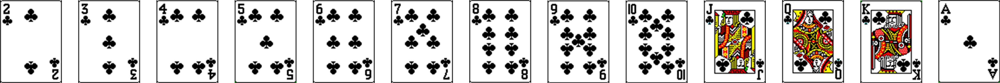
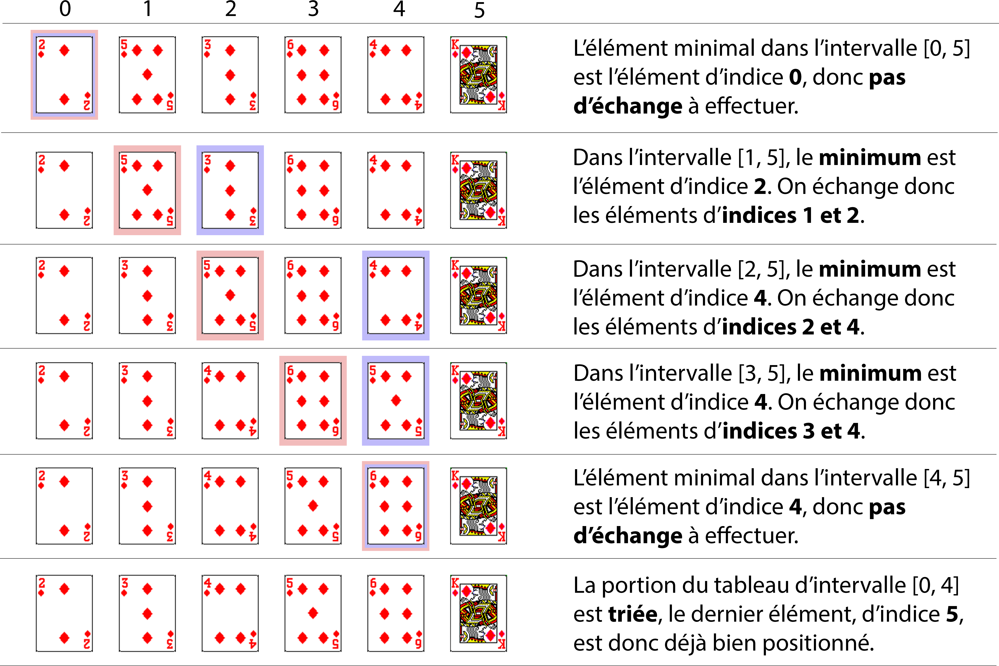
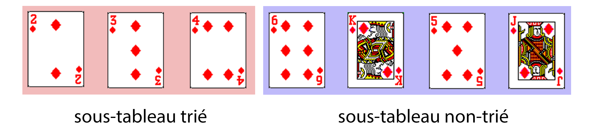

Le tri par sélection
Le tri par sélection (du minimum ou du maximum) est un algorithme de tri par comparaisons.
Il s'agit d'un algorithme simple mais qui est, comme on le verra, inefficace.
Présentation du tri
Avec un jeu de cartes
Pour comprendre le fonctionnement de ce tri, voici une petite activité à réaliser avec un jeu de cartes traditionnel.
On souhaite trier une suite de 7 cartes arbitrairement choisies.
Par exemple :

On ne se souciera ici que des valeurs des cartes et non de leurs couleurs.
Voici l'ordre des valeurs des cartes, de la moins forte à la plus forte, que l'on utilisera :

Note : Si la carte Joker existe dans votre jeu, on considèrera qu'elle est plus forte que toutes les autres cartes.
Principe du tri par sélection
Le principe du tri par sélection du minimum est le suivant :
- Chercher l'indice de la plus faible carte de la suite (à partir de l'indice 0) et échanger cette carte avec celle qui est placée en premier. La première carte est maintenant la plus faible.
- Chercher l'indice de la plus faible carte de la suite en partant du 2ème élément (indice 1) et échanger cette carte avec celle qui est placée en deuxième. Les deux premières cartes sont les plus faibles et sont maintenant triées.
- Poursuivre ainsi jusqu’à l’avant dernière carte de la suite.

Simulation avec des barres
Voici une simulation du tri par sélection en utilisant des barres de différentes tailles comme éléments.
Le but est de trier les barres de la plus petite à la plus grande.
Simulation du tri par sélection du minimum
L'algorithme
L'algorithme du tri par sélection peut être implémenté en place ou non.
Tri en place
Un tri est dit en place s'il modifie directement la structure qu’il est en train de trier, plutôt que de créer et de renvoyer une nouvelle structure.
Ici, on ne renverra pas de nouveau tableau, on modifiera directement le tableau donné en entrée.
Le tri s'effectuera par sélection du minimum.
Pour simplifier les choses, on commence par séparer l'algorithme de tri en 3 sous-algorithmes :
- l'algorithme principal
tri_selection(tableau)permettant de trier un tableau d'éléments avec le tri par sélection, - l'algorithme
minimum(tableau, debut)permettant la recherche de l'indice de l'élément minimal du tableau à partir de l'indicedebutdonné, - l'algorithme
echanger(tableau, i, j)permettant d'échanger deux éléments d'indicesietjdonnés.
Algorithme du tri par sélection
ALGORITHME : tri_selection
ENTRÉES :
tableau : un tableau d'éléments pouvant être comparés
SORTIE : aucune (tri en place)
DÉBUT
n ← longueur(tableau)
POUR debut ALLANT DE 0 À n - 2
indice_min ← minimum(tableau, debut)
echanger(tableau, debut, indice_min)
FIN POUR
Renvoyer ∅
FIN ALGORITHME
Algorithme de recherche du minimum
ALGORITHME : minimum
ENTRÉES :
tableau : un tableau d'éléments
debut : l'indice à partir duquel effectuer la recherche
SORTIE : l'indice de l'élément minimal dans l'intervalle [debut, longueur(tableau) - 1] du tableau
DÉBUT
indice_min ← debut
POUR i ALLANT DE debut + 1 À longueur(tableau) - 1
SI tableau[i] < tableau[indice_min], ALORS
indice_min ← i
FIN POUR
Renvoyer indice_min
FIN ALGORITHME
Algorithme d'échange d'éléments
ALGORITHME : echanger
ENTRÉES :
tableau : un tableau d'éléments
i : l'indice d'un élément du tableau
j : l'indice d'un autre élément du tableau
SORTIE : aucune (tri en place)
DÉBUT
temp ← tableau[i]
tableau[i] ← tableau[j]
tableau[j] ← temp
Renvoyer ∅
FIN ALGORITHME
Voici enfin une version en un seul algorithme :
Algorithme du tri par sélection
ALGORITHME : tri_selection
ENTRÉES :
tableau : un tableau d'éléments pouvant être comparés.
SORTIE : aucune (tri en place)
DÉBUT
n ← longueur(tableau)
POUR debut ALLANT DE 0 À n - 2
indice_min ← debut
POUR i ALLANT DE debut + 1 À n - 1
SI tableau[i] < tableau[indice_min], ALORS
indice_min ← i
FIN POUR
temp ← tableau[debut]
tableau[debut] ← tableau[indice_min]
tableau[indice_min] ← temp
FIN POUR
Renvoyer ∅
FIN ALGORITHME
Note
La première boucle POUR s'arrête à n - 2 car si tous les éléments de l'intervalle [0, longueur(tableau) - 2] sont triés, l'élément d'indice longueur(tableau) - 1 est obligatoirement déjà à la bonne position.
Stabilité du tri
Un tri est dit stable s'il préserve l’ordonnancement initial des éléments que l'ordre considère comme égaux.
Le tri par sélection est, dans le cas de notre algorithme, instable car en cas de valeurs identiques dans le tableau initial, leur ordre relatif peut être modifié.
Exemple : Avec le tableau [2, 4a, 4b, 3, 7, 5], l'ordre des éléments de valeur 4 n'est pas conservé.
Sélection du maximum
Si l'on souhait écrire cet algorithme en sélectionnant le maximum plutôt que le minimum, le principe serait le même, mais le parcours s'effectuerait du dernier élément au premier élément du tableau. Le tableau serait dans ce cas d'abord composé de la partie non triée, puis de la partie triée.
À vous de jouer
Question 1 : Déroulez le tri par sélection du minimum sur le tableau [7, 1, 5, 3, 8, 5] en vous aidant du tableau suivant :

Question 2 : Faites de même sur le tableau [5, 3, 1, 4, 6, 2].
Question 3 : Même chose cette fois avec le tableau ['b', 'e', 'c', 'w', 'p', 'q']. On utilisera l'ordre lexicographique.
Implémentation du tri par sélection
On va maintenant implémenter l'algorithme du tri par sélection en Python.
Les tableaux seront représentés par des listes Python (objets de type list).
Question préliminaire
Les listes Python sont-elles des structures de données mutables ou non ? Citer 2 structures mutables et deux structures non-mutables en Python.
Note : Pour simplifier, on parlera de tableaux triés pour parler de tableaux triés dans l'ordre croissant.
À télécharger
Récupérer le fichier tri_selection.py à compléter.
Question 1
- Compléter les fonctions :
minimum(tableau, debut): renvoie l'indice de l'élément de valeur minimale dans l'intervalle[debut, len(tableau) - 1].echanger(tableau, i, j): échange les éléments d'indicesietjdu tableautableau.
- Compléter la fonction
tri_selection(tableau)qui effectue le tri par sélection des éléments d'un tableautableaudonné, en réutilisant les deux fonctions précédentes. - Est-il nécessaire de mettre un
return None? Pourquoi ? - Peut-on dire que la fonction
tri_selectionest une procédure ? Pourquoi ?
Tester ma fonction
Le programme est muni de tests (lignes 12 à 21) exécutés par le module Doctest.
Vous pouvez donc tester vos fonctions en exécutant simplement le programme. Si rien ne se passe, c'est que tout est bon. Sinon, l'interpréteur indiquera les tests qui ont échoué.
(Vous pouvez rajouter d'autres tests ou effectuer des tests sur l'interpréteur si vous le souhaitez.)
Question 2
Compléter la fonction tri_selection_tout_en_un(tableau) en ré-écrivant le tri par sélection sans appeler d'autres fonctions (les recherches du minimum et les échanges sont effectués directement dans cette fonction).
Question 3
Écrire la fonction tri_selection_decroissant(tableau) qui effectue le tri par sélection des éléments d'un tableau dans l'ordre décroissant.
Question 4
Dans les tests, à la ligne 18, on trouve l'instruction l = [randint(0, 100) for _ in range(20)].
Que fait cette instruction ? Quel est le nom de la méthode de création de liste utilisée ?
Coût du tri par sélection
Voyons à présent quel est le coût du tri par sélection.
On rappelle l'algorithme du tri par sélection et de recherche du minimum :
Algorithme du tri par sélection
ALGORITHME : tri_selection
ENTRÉES :
tableau : un tableau d'éléments pouvant être comparés
SORTIE : aucune (tri en place)
DÉBUT
n ← longueur(tableau)
POUR debut ALLANT DE 0 À n - 2
indice_min ← minimum(tableau, debut)
echanger(tableau, debut, indice_min)
FIN POUR
Renvoyer ∅
FIN ALGORITHME
Algorithme de recherche du minimum
ALGORITHME : minimum
ENTRÉES :
tableau : un tableau d'éléments
debut : l'indice à partir duquel effectuer la recherche
SORTIE : l'indice de l'élément minimal dans l'intervalle [debut, longueur(tableau) - 1] du tableau
DÉBUT
indice_min ← debut
POUR i ALLANT DE debut + 1 À longueur(tableau) - 1
SI tableau[i] < tableau[indice_min], ALORS
indice_min ← i
FIN POUR
Renvoyer indice_min
FIN ALGORITHME
Question 1
On souhaite calculer le nombre de comparaisons effectué pour trier la liste [3, 7, 1, 6, 5, 2].
Compléter le tableau suivant en indiquant le nombre de comparaisons effectué après chaque itération de la boucle principale POUR debut ALLANT DE 0 À n - 2, c'est-à-dire le nombre de comparaisons effectué par l'algorithme minimum(tableau, debut) pour chaque valeur de debut de 0 à n, n étant la longueur du tableau.
| itération k = | debut |
tableau après itération k | nombre de comparaisons |
|---|---|---|---|
| 1 | 0 | [1, 7, 3, 6, 5, 2] | ... |
| 2 | 1 | [1, 2, 3, 6, 5, 7] | ... |
| 3 | 2 | [1, 2, 3, 6, 5, 7] | ... |
| 4 | 3 | [1, 2, 3, 5, 6, 7] | ... |
| 5 | 4 | [1, 2, 3, 5, 6, 7] | ... |
Calculer le nombre de comparaisons au total, noté \(C(6)\), effectué pour trier ce tableau.
Question 2
Si l'on change les éléments du tableau de la question précédente, le nombre de comparaisons change t-il ? Pourquoi ?
Question 3
Calculer le nombre de comparaisons, noté \(C(n)\), pour un tableau de taille \(n\).
Finalement, quelle est la complexité du tri par sélection ? (Voir l'aide ci-dessous si nécessaire.)
Calcul de la somme des termes d'une suite arithmétique
On rappelle la formule permettant de calculer la somme des \(n + 1\) premiers termes d'une suite arithmétique :
Par exemple :
Rappel sur les complexités
Voici un rappel sur les différentes complexités :
- Logarithmique \(Θ(log~n)\) : la complexité évolue moins vite que le nombre n de données (par exemple : si on multiplie le nombre de données n par 2, on ne rajoute qu'une seule opération).
- Linéaire \(Θ(n)\) : la complexité évolue comme le nombre n de données (par exemple : si on multiplie le nombre de données n par 2, le temps d'exécution est multiplié par 2).
- Quasi-linéaire \(O(n~log~n)\) : Intermédiaire entre linéaire et quadratique. En pratique, un algorithme de complexité quasi-linéaire a un comportement très proche d’un algorithme de complexité linéaire.
- Quadratique \(Θ(n^2)\) : la complexité évolue comme le carré du nombre n de données (par exemple : si on multiplie le nombres de données n par 2, le temps d'exécution est multiplié par 4).
- Exponentielle \(Θ(2^n)\) : la complexité évolue à terme beaucoup plus vite que n'importe quelle fonction polynomiale du nombre n de données (par exemple : si on multiplie le nombre de données n par 100, le temps d'exécution est multiplié par \(2^{100}\), soit 1267650600228229401496703205376).
À télécharger
Récupérer le fichier analyse_tri_selection.py.
Ce fichier permet de compter le nombre de comparaisons effectué par le tri par sélection, en utilisant une variable globale CNT incrémentée à chaque comparaison de deux éléments effectuée.
Vous pouvez modifier l'instruction à la ligne 38 en changeant le tableau pour lequel vous souhaitez compter le nombre de comparaisons.
Terminaison du tri par sélection
Variant de boucle
On appelle variant de boucle toute quantité \(v\) (qui peut être déterminée en fonction des différentes variables du programme) telle que :
- \(v\) ne prend que des valeurs entières,
- \(v\) est initialement positive,
- \(v\) décroit strictement à chaque passage dans la boucle.
On exhibe un variant de boucle pour démontrer qu'une boucle se termine, en un temps fini.
S'il existe plusieurs boucles dans un programme, il faut trouver autant de variants qu'il y en a.
Prouver la terminaison
Concrètement, on peut prouver la terminaison d'un algorithme en montrant que les deux propositions suivantes sont vraies :
- Proposition A : les boucles peuvent s'exprimer sous la forme TANT QUE VARIANT > 0
- Proposition B : le VARIANT est une suite d'entiers strictement décroissante.
Si les deux propositions A et B sont vraies (\(A \land B\)), l'algorithme s'arrêtera toujours. Autrement (au moins l'une des deux propositions n'est pas vérifiée, \(\neg(A \land B)\)), il existe au moins un cas où l'algorithme ne se terminera pas.
Exemple
Démontrons que la boucle POUR suivante se termine :
On peut ré-écrire cette boucle POUR avec une boucle TANT QUE :
Si on note \(n\) le nombre de tours de boucle effectué, on peut représenter les valeurs successives que va prendre \(i\) sous la forme d'une suite arithmétique :
\(i_n = i_0 + r*n\), avec \(i_0\) la valeur initiale de \(i_n\) et \(r\) la raison de la suite.
Ici, \(i_0 = 10\) et \(r = 5\).
Donc \(i_n = 10 + 5n\).
On peut donc ré-écrire la condition TANT QUE de la manière suivante :
TANT QUE \(i_n < 50\)
TANT QUE \(10 + 5n < 50\)
TANT QUE \(0 < 50 - 10 - 5n\)
TANT QUE \(50 - 10 - 5n > 0\)
TANT QUE \(60 - 5n > 0\)
On obtient donc notre variant \(v_n\) qui prend la forme d'une nouvelle suite arithmétique :
\(v_n = v_0 - r*n\) avec \(v_0 = 60\) pour valeur initiale et \(r = -5\) pour raison de la suite.
Donc :
\(v_n = 60 - 5n\) est un variant de la boucle car il s'agit d'une suite d'entiers, initialement positive et qui décroit strictement à chaque tour de boucle (car la raison est négative).
On a trouvé un variant, et donc démontré la terminaison de notre boucle.
Question 1
Montrer la terminaison de l'algorithme de recherche du minimum.
Algorithme de recherche du minimum
ALGORITHME : minimum
ENTRÉES :
tableau : un tableau d'éléments
debut : l'indice à partir duquel effectuer la recherche
SORTIE : l'indice de l'élément minimal dans l'intervalle [debut, longueur(tableau) - 1] du tableau
DÉBUT
indice_min ← debut
POUR i ALLANT DE debut + 1 À longueur(tableau) - 1
SI tableau[i] < tableau[indice_min], ALORS
indice_min ← i
FIN POUR
Renvoyer indice_min
FIN ALGORITHME
Astuce question 1
La démarche à suivre est similaire à celle de l'exemple précédent.
- Ré-écrire la boucle POUR sous la forme d'une boucle TANT QUE.
- Exprimer \(i\) en fonction du nombre de tours de boucle \(n\) sous la forme d'une suite entière arithmétique croissante (\(i_n = i_0 + r*n\) où \(i_0\) est le terme initial et \(r\) est la raison).
- Écrire la condition du TANT QUE en partant de l'inégalité de départ et de l'expression de \(i_n\), et tenter d'obtenir une nouvelle inégalité de la forme \(v_n > 0\), où \(v_n\) est une suite d'entiers strictement décroissante.
- On a trouvé un variant \(v_n\) : La boucle se termine !
Question 2
Montrer enfin la terminaison de l'algorithme du tri par sélection.
Algorithme du tri par sélection
ALGORITHME : tri_selection
ENTRÉES :
tableau : un tableau d'éléments pouvant être comparés
SORTIE : aucune (tri en place)
DÉBUT
n ← longueur(tableau)
POUR debut ALLANT DE 0 À n - 2
indice_min ← minimum(tableau, debut)
echanger(tableau, debut, indice_min)
FIN POUR
Renvoyer ∅
FIN ALGORITHME
Astuce question 2
- On a montré que
minimumse termine, - la fonction
echangerse termine (car il s'agit simplement de trois affectations), - il ne reste plus qu'à montrer que la boucle principale se termine, avec la même démarche que précédemment.
Preuve de correction du tri par sélection
Dans les deux parties précédentes, nous avons montré :
- Le coût algorithmique de l'algorithme du tri par sélection, qui est toujours quadratique, c'est-à-dire en \(\Theta(n^2)\). Cela signifie que si l'on double la taille de l'entrée, le temps d'exécution sera à peu près multiplié par 4.
- La terminaison de l'algorithme. On sait que l'algorithme finira toujours par se terminer.
Il reste toutefois à démontrer que l'algorithme renvoie toujours un résultat correct.
Attention
Dans notre implémentation en Python, on a effectué quelques tests (avec une doctest notamment) pour vérifier le fonctionnement de l'algorithme. Toutefois, cela ne prouve pas que l'algorithme est correct, seulement qu'il fonctionne avec un jeu de tests défini.
Dans notre cas, il y a une infinité d'entrées possibles qui respectent la spécification, on ne peut donc pas démontrer la correction de notre algorithme en se contentant d'effectuer des tests.
La preuve de correction d'un algorithme permet d'affirmer :
- qu'il fournit toujours la bonne réponse
- sur toutes les entrées valides qu'on lui donne (les entrées qui respectent les préconditions).
Pour démontrer la correction, il faut déterminer un invariant de boucle pour la boucle principale de notre algorithme.
Invariant de boucle
On appelle invariant de boucle une propriété \(P\) qui est vraie avant et après chaque itération de la boucle.
L'invariant ainsi déterminé permettra de prouver que le résultat final après exécution est bien le résultat attendu.
Il n'existe pas de méthodologie miracle permettant de déterminer systématiquement un invariant. Cela demande de chercher et de tester des choses jusqu'à trouver une propriété qui convienne.
Une fois qu'une propriété a été déterminée, il faut la démontrer en utilisant un raisonnement par récurrence.
Démonstration de l'invariant par récurrence
Pour montrer à l'aide d'une récurrence simple qu'une proposition \(P(k)\) est vérifiée pour tout entier \(k \ge 0\), avec \(k\) le nombre d'itérations de la boucle effectuées :
- Initialisation : on vérifie que la proposition est vraie au rang initial \(0\), c'est-à-dire avant le premier passage dans la boucle.
- Conservation : on suppose que la proposition est vraie à un certain rang \(k \ge 0\) fixé, c'est-à-dire après \(k\) tours de boucle, et on en déduit qu'elle est vraie au rang suivant \(k + 1\), c'est-à-dire après un tour de boucle en plus. On peut écrire \(P_k \implies P_{k+1}\).
- Terminaison : « par récurrence, la proposition est vraie pour tout entier \(k \ge 0\). »
Dans la cas du tri par sélection, on peut décomposer le problème en :
- un sous-tableau trié à gauche,
- un sous-tableau non-trié à droite.

À chaque itération de la boucle principale, on sélectionne le minimum dans le sous-tableau non-trié et on le place à la fin du sous-tableau trié.
Initialement (avant d'entrer la première fois dans la boucle), le sous-tableau trié est vide, et on y ajoute un élément à chaque tour de boucle.
Une proposition d'invariant
On propose l'invariant \(P_k\) suivant : « après \(k\) tours de boucle, \(k\) éléments sont triés dans le sous-tableau \([0, k-1]\) de gauche. »
Algorithme du tri par sélection
ALGORITHME : tri_selection
ENTRÉES :
tableau : un tableau d'éléments pouvant être comparés
SORTIE : aucune (tri en place)
DÉBUT
n ← longueur(tableau)
POUR debut ALLANT DE 0 À n - 2
indice_min ← minimum(tableau, debut)
echanger(tableau, debut, indice_min)
FIN POUR
Renvoyer ∅
FIN ALGORITHME
Question 1 : Initialisation
- Après 0 tour de boucle, c'est-à-dire avant d'entrer une première fois dans la boucle, combien y a t-il d'éléments dans le sous-tableau trié ?
- La proposition \(P_0\) est-elle vérifiée ?
On a vu que l'invariant était bien vérifié pour \(P_0\), c'est-à-dire avant d'entrer une première fois dans la boucle.
Question 2
Quelle valeur va prendre debut lors de la première itération de la boucle principale ? Que va contenir tableau[debut] après la première itération de la boucle ? Combien d'éléments \(k\) contiendra le sous-tableau trié après cette itération ?
Quelle valeur va prendre debut lors de la seconde itération de la boucle principale ? Combien d'éléments \(k\) seront ainsi triés après cette itération ?
Établir une relation entre le nombre de tours de boucle \(k\) et debut.
On fait maintenant l'hypotèse que \(P_k\) est vraie pour un \(k \ge 0\) fixé.
Après \(k\) tours de boucle, le sous-tableau trié contient \(k\) éléments et le tableau se compose :
- d'un sous-tableau trié sur \([0, k-1]\)
- d'un sous-tableau non-trié sur \([k, longueur(tableau) - 1]\)
Démontrons maintenant la conservation.
Question 3 : Conservation
Montrer que l'implication \(P_k \implies P_{k+1}\) est vraie.
Rappelons notre invariant \(P_k\) : « après \(k\) tours de boucle, \(k\) éléments sont triés dans le sous-tableau \([0, k-1]\) de gauche » et que :
- dans la phase d'initialisation, on a montré que l'invariant \(P_0\) était vrai avant la première itération de la boucle POUR principale,
- avec la conservation, on a montré que l'implication \(P_k \implies P_{k+1}\), donc que l'invariant restait vrai après chaque tour de boucle.
On rappelle que la relation entre \(k\) et la variable de boucle \(debut\) est \(k = debut + 1\) et que :
- à la fin de la première itération \(k = 1\),
debutvaut 0 et on a 1 élément trié, - à la fin de la seconde itération \(k = 2\),
debutvaut 1 et on a 2 éléments triés, - à la fin de la troisième itération \(k = 3\),
debutvaut 2 et on a 3 éléments triés, - et ainsi de suite...
DONC, à la fin de la boucle POUR debut ALLANT DE 0 À n - 2, debutvaut \(n - 2\) avec \(n = longueur(tableau)\) et donc :
\(k = debut + 1\)
\(k = longueur(tableau) - 2 + 1\)
\(k = longueur(tableau) - 1\)
Cela signifie qu'il y a \(longueur(tableau) - 1\) éléments triés, donc tous les éléments du tableau sauf le dernier sont triés.
Or, si tous les éléments sur \([0, longueur(tableau) - 2]\) sont triés, alors l'élément d'indice \(longueur(tableau) - 1\) est lui aussi trié, puisque le dernier élément est supérieur (ou égal) à tous les éléments du sous-tableau trié. Il est donc déjà à la bonne position.
On a donc ainsi démontré la correction de l'algorithme de tri par sélection.
Vérifier l'invariant avec une assertion
Vérifions la validité de notre invariant sur la fonction tri_selection réalisée précédemment en Python.
La fonction est_trie(tableau, fin) renvoie True si les éléments du sous-tableau [0, fin] du tableau donné sont triés, False sinon. Si l'indice fin n'est pas donné, la fonction vérifie que l'entièreté du tableau est triée.
def est_trie(tableau: list[int], fin: int = None) -> bool:
''' Renvoie True si les éléments du tableau dans [0, fin] sont triés,
False sinon. Si pas d'indice de fin donné, vérifier tout le tableau.
:param tableau: (list[int]) tableau d'entiers à vérifier
:param debut: (int) indice jusqu'auquel vérifier les éléments
:return: (bool) True ou False selon si les éléments sont triés ou non. '''
if fin == None: fin = len(tableau) - 1
return all(tableau[i - 1] <= tableau[i] for i in range(1, fin + 1))
Note
La fonction native all(iterable) utilisée dans la fonction ci-dessus renvoie True si tous les éléments de iterable sont vrais (ou s'il est vide). Dès qu'un élément est faux, la fonction s'arrête et renvoie False.
Question 1
Modifier la fonction tri_selection en ajoutant une assertion (avec le mot-clé assert) vérifiant, en faisant appel à est_trie, qu'après chaque itération de la boucle, la propriété de l'invariant est respectée.
Réponse 1
def tri_selection(tableau: list[int]) -> None:
''' Effectue le tri par sélection en place des éléments d'un tableau donné.
:param tableau: (list[int]) un tableau d'entiers à trier '''
n = len(tableau)
for debut in range(0, n - 1):
indice_min = minimum(tableau, debut)
echanger(tableau, debut, indice_min)
assert est_trie(tableau, debut)
À la fin de chaque itération, on vérifie avec la fonction est_trie que le sous-tableau [0, debut] est trié.
Dans l'interpréteur de Thonny, exécuter la commande suivante :
>>> tri_selection([[63, 25, 81, 76, 75, 87, 66, 18, 43, 68, 48, 98, 57, 41, 97, 59, 57, 74, 28, 28]])
Question 2
Que se passe t-il ? Pourquoi ?
Réponse 2
S'il ne se passe rien, c'est normal ! Cela signifie que l'expression spécifiée dans l'assertion est évaluée à True à chaque fois, et donc que l'invariant est bien vérifié après chaque tour de boucle.